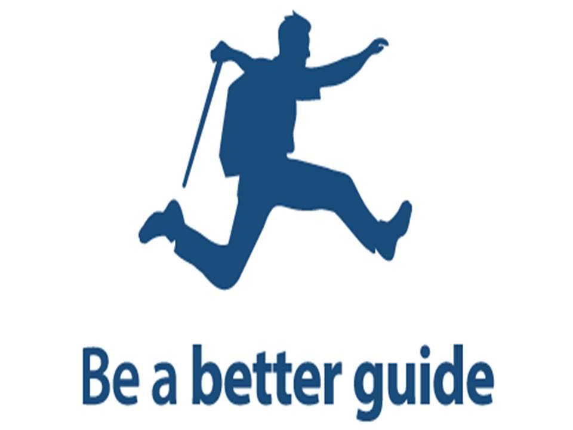
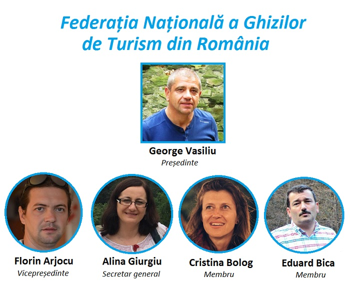
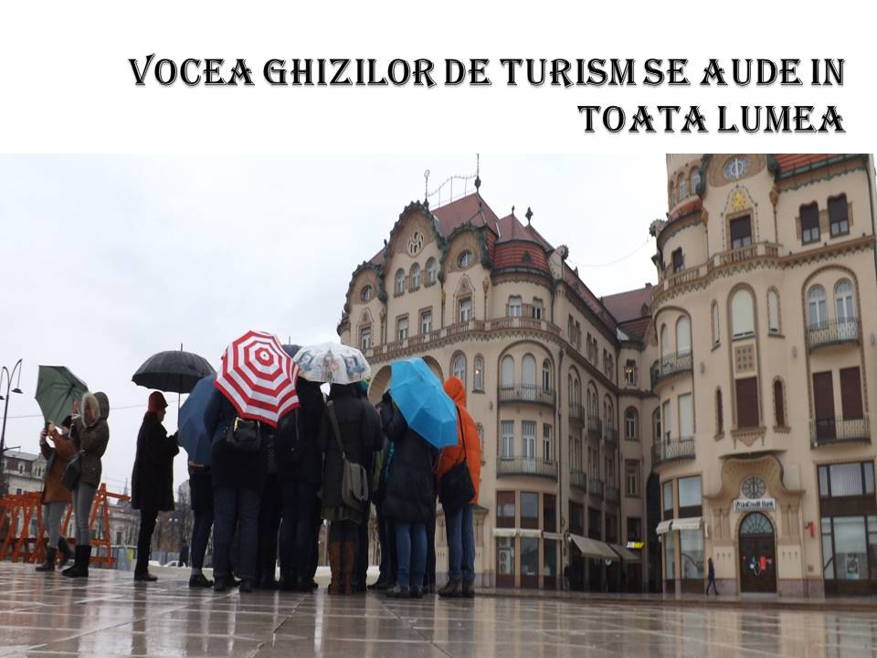

Ghizi de turism din întreaga țară, autorități locale și județene, reprezentanți ai obiectivelor turistice, jurnaliști și bloggeri de turism au participat la cea de-a doua ediție a Conferinței Naționale a Ghizilor de Turism din România. Tema conferinței din acest an a fost: „Turismul sustenabil și ghidul de turism”. La Conferință, ghizii de turism au pus în discuție problemele cu care se confruntă, lacunele și noutățile din legislația din domeniu și modificările pe care și le doresc pentru a-și îmbunătăți activitatea și serviciile. De asemenea, s-a discutat despre școlarizarea și formarea ghizilor, lipsa ghizilor locali în diverse regiuni ale țări și despre cum ar trebui să fie respectată această meserie. S-au dat exemple internaționale, s-au propus inițiative și activități de consolidare a breslei ghizilor de turism și diverse modalități de promovare a țării și a regiunii Bihor. Un alt moment interesant a fost networking-ul. Ghizii și-au împărtășit experiențele plăcute și neplăcute întâmplate atât pe teritoriul României cât și în străinătate. Și pentru a vă descreți frunțile vă voi spune un banc auzit de la un ghid de turism: Știți cum li se mai spune ghizilor de turism? Răspuns: Șahiști! De ce? Pentru că plimbă nebunii dintr-un colț în altul.   |
 |